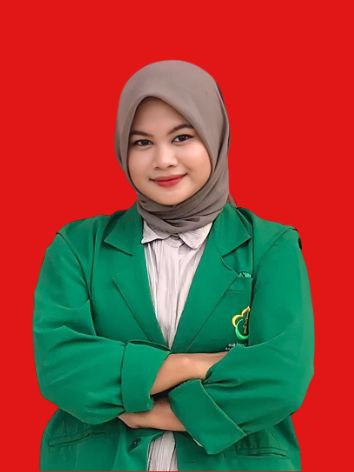

SILPA ISHARI PASARIBU
m a h a s i s w a
Saya Silpa Ishari Pasaribu. Lahir di Kabupaten Labuhanbatu Utara, 10 September 2002.
Saat ini sedang menempuh pendidikan di Universitas Malikussaleh Jurusan S-1 Teknik Informatika. Merupakan seorang yang jujur dan bertanggung jawab serta suka menolong walaupun tidak suka menabung. Paling suka dengan Kim Mingyu dan Jeon Wonwoo.
"Pada dasarnya saat ini kita sedang berkembang dan kita tidak tahu batas potensi
dalam diri kita. Meskipun kita sudah tahu batasnya,kita harus mengincar yang
lebih tinggi." (Daichi Sawamura, Haikyuu!)